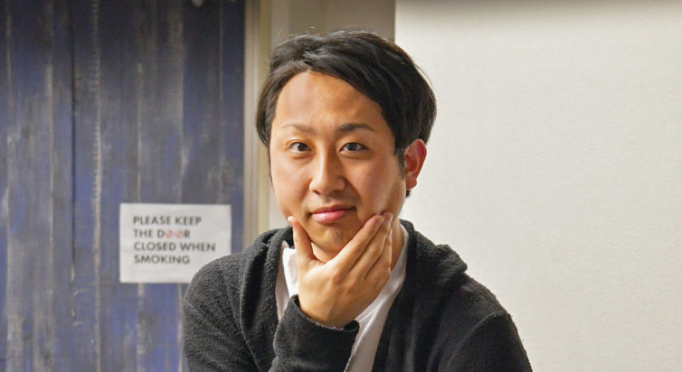
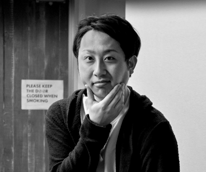
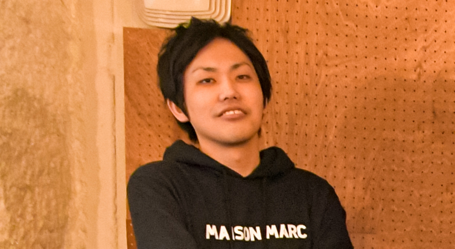
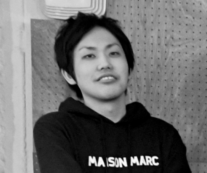
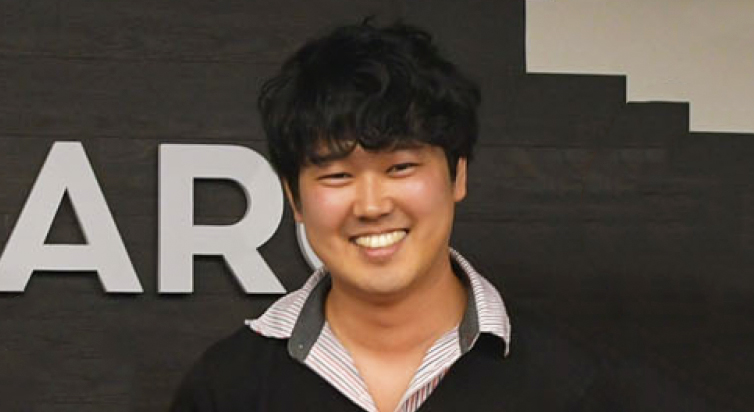
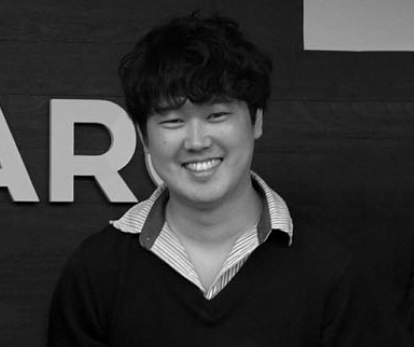
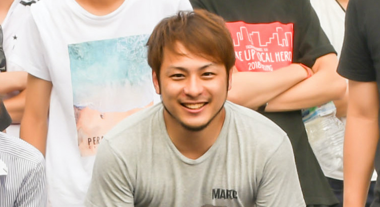
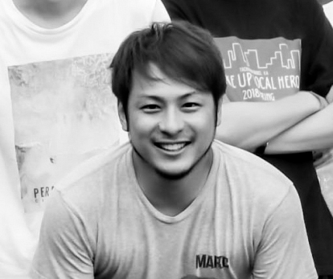
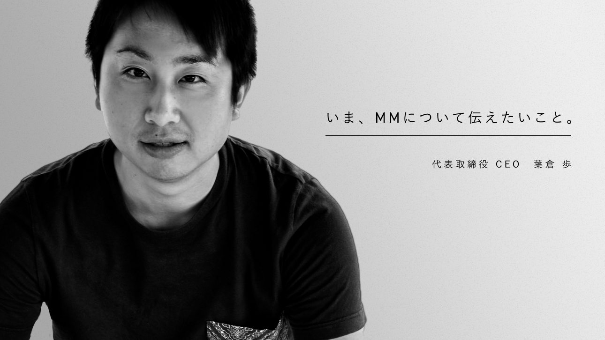

N E W M M
仲間の幸せを共に実現し、
MAISON MARCに関わる全てを幸せに
目標に向かって切磋琢磨できる「仲間」
挑戦に対して投資ができる「環境」
高い意識のもと磨く「技術」
これらを軸にやりたいことができる。
それがMAISON MARCの考える幸せである。
1st PERSON
葉 倉 歩


株式会社MAISON MARCで代表取締役をしてしております。
「仲間の幸せを共に実現し、MAISON MARCに関わる全てを幸せに」
を企業理念として2015年に創業しました。
他業種の企業様と組むことが多いですが、Web開発・運用、広告運用まで行なっております。
今後も様々なやりたいを形にしていきます。
2nd PERSON
永 松 大 尚


株式会社MAISON MARCの創業メンバーとして、ジョイン。
現在は人事責任者・COOとして、個人の価値観や組織調和などの
『正解のない大切なもの』に触れらるやりがいや難しさを日々実感しながら汗をかく日々。
メンバーが夢中になれる組織づくりをするのが目標です。
抽象的だけど、みんながそう感じてくれるように。
海外サッカーが大好き
3rd PERSON
島 田 瞳
株式会社メゾンマークでデザインを見ています。
Webデザインが大好きで14歳のときに独学でコーディングを行い、趣味だったイラストのサイトをオープン
しました。そこからずっと独学で舌が、本格的にデザインを学びたいと思い上京して制作会社でデザイナー
とパリピな考えで女性系スナップメディアを運営している会社に転職し、デザイナーとしてメディア運営を
経験しました。
メゾンマークでは、webデザインだけではなくオフィスデザインやオフィシャルグッズのデザイン、案件に
よってはCIやDTPんだお様々な場面でデザイナーが活躍しています。
4th PERSON
下 平 智 也


Web制作のプロフェッショナル集団『メゾンマーク』で営業責任者をしております。
当社にはハイセンスなデザイナーが複数名在籍しており、クライアント様からも高い評価をいただいており
ます。また、フロントエンドエンジニアも技術力に長けており、当社のデザイナーデザイナーとエンジニア
を駆使し、如何にクオリティが高いサイトを制作できるかが私のミッションです。
お客様の”こうしたい”を実現し、さらに期待を超えられるよう企画・推進できるよう日々研鑽し、仕事に取
り組んでいます。
5th PERSON
白 藤 卓 也


MAISON MARC CTOとして、開発責任者をしています。
最近はフロンt30%、バックエンド60%、インフラ10%くらいの割合で仕事してます。
web界隈の、「これ作って」に対して時間とリソースが許す限りは大体作れます。
もっとインフラやらないと...！
MMならではのWeb制作に懸ける思いや
あらゆる方法で「幸せ」を追求する代表の思い。
そしてMAISON MARCGA描く未来の姿を、
代表取締役CEO 葉倉 歩に聞く。
